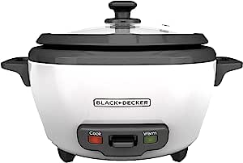
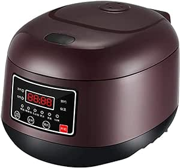
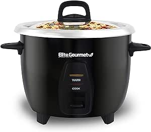

Aroma Housewares

Perfectly prepares 2 to 6 cups of any variety of cooked rice 100% food-grade 304 stainless steel cooking pot for clean eating and optima l durabilitySteams meat and vegetables with the provided stainless steel steam tray while rice cooks below Simple, one-touch operation with automatic Keep Warm function at the end of the cycle Great for soups, jambalaya, chili and so much more!
- Brand: Aroma Housewares
- Capacity: 1.2 quarts
- Product Dimensions: 21D x 26.4W x 24 1H Centimetres
- Power source Corded :Electric
- Product care instructions: Dishwasher Safe
BLACK+DECKER Cooker

16-Cup Capacity - Prepare anywhere from 3 to 16 cups of cooked rice, great for one large meal or to save as leftovers.Steaming Basket - The included steaming basket lets you make healthy meals with vegetables, fish, and more. 120V, Lid and spoon hanger Removable Nonstick Bowl - The nonstick cooking bowl is completely removable for easy dishwasher cleanup.Automatic Keep Warm - The rice stays ready for serving!
- Brand :BLACK + DECKER HOME
- Capacity : 7 Cups
- ower source Corded: Electric
- Product instructions: hand wash safer
Hamilton beach

Measuring scoop and mixing paddle are made to fit the appliance.Non-stick removable pot cleans easily.
Keep Warm function preserves heat.Easy assembly - simply place the removable pot inside the body and cover with the lid, plug in the appliance, and you’re ready to start! Auto shut-off function with an indicator light prevents overheating and overcooked ingredient
- Brand DASH
- Capacity 2 Cups
- Product Dimensions 16.5D x 21.6W x 16H Centimetres
- Power source Corded Electric
- Product care instructions Hand Wash
Elite Gourmet

COOK MOUTH-WATERING & FLUFFY RICE EVERY SINGLE TIME without wasting your time over the pot. The Elite Gourmet ERC-2010 professional rice cooker is here to help you cook up to 10 cups (5-cups uncooked) of your favorite jasmine, basmati or brown rice. No more waiting for the water to boil, no more watching and guessing if the rice is cooked. Our innovative rice cooker
- Brand: Elite Gourmet
- Capacity: 1.2 liters
- Product Dimensions: 23.4D x 23.4W x 26.2H Centimetres
- Power source Corded :Electric
- Product care instructions: Dishwasher Safe